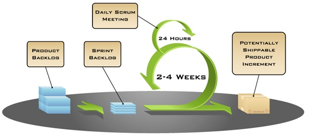
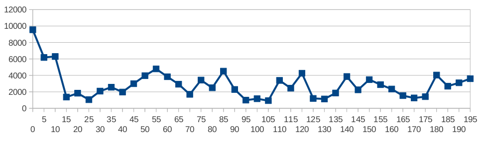
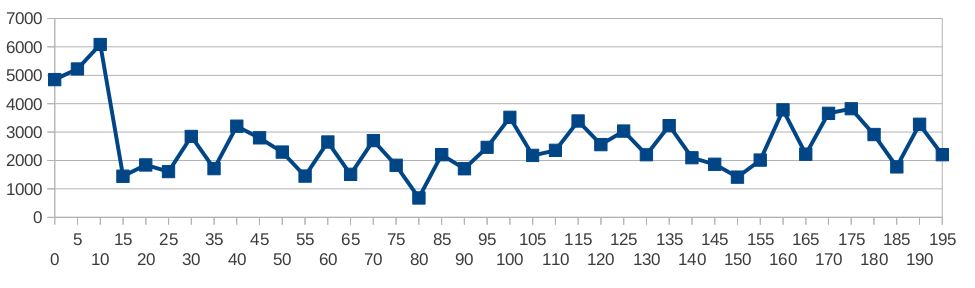
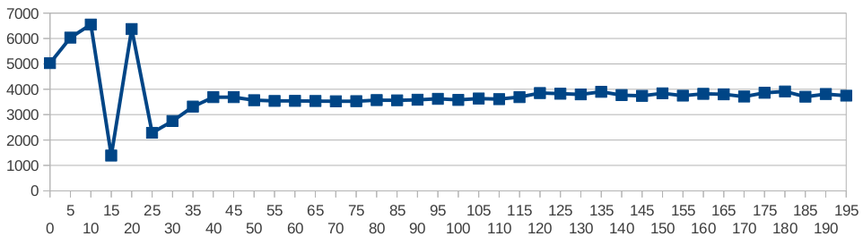
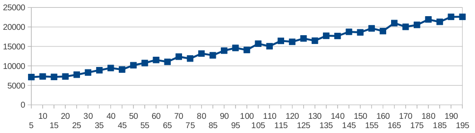
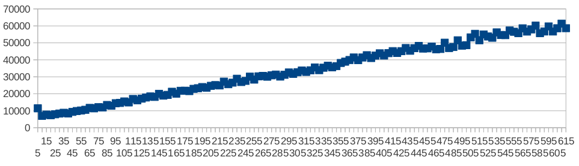

FunReco
Moteur de recommandations de contenu pour FunRadio

Tuteur entreprise : Damien Bourdette
Thomas Brien - Boutayna Lamrani - Angela Prestaux
Le projet
Contexte & Environnement
- Nouveau site Fun Radio
- Connectivité Facebook
- Recommandation de contenu (musique, vidéos)
Objectifs & Stratégie
- Moteur de recommandation dans une application à part : FunReco
- Utilisation de l'API OpenGraph Facebook
- Restriction d'usage
- Appel à une base de données (MongoDB)
- Webservices REST pour faire la jonction avec le site client
Déroulement
Méthodologie Agile
Méthode de développement Agile "Scrum"
Méthodologie Agile
Estimation des charges
- Tâche triviale --> 1
- Tâche simple --> 2
- Tâche compliquée --> 4
- Tâche complexe --> 8
Méthodologie Agile
Github

Test Driven Development
Développement par les tests
Librairie Java dédiée : JUnit
Write the tests first
Moteur de recommandation
Des profils, des actions, des liens d'amitié
Les moteurs existants
- Description
- Classification
- Classement
L'impératif de temps de réponse
Le semi-aléatoire pour seul espoir...
Performances sur la base de test
Avec 67 amis, et quelques actions en base
 Avec 39 amis, et peu d'actions en base
Avec 611 amis, et aucune action en base
 Groovy/Grails/mongoDB


Spring MVC
Migration vers Spring MVC
Migration vers Spring MVC
Raisons :
- Convention Over Configuration
- Documentation courte & floue
Mise en production
Environnement Apache
Gestionnaire de build Maven & Tomcat
Intégration continue avec Jenkins connecté au GitHub


Résultats
L'application ...... en production ...
... et son interface Jenkins
Conclusion
- Découverte de technologies avancées
- Mise en application des bonnes pratiques
- Premier aperçu d'un projet informatique en entreprise